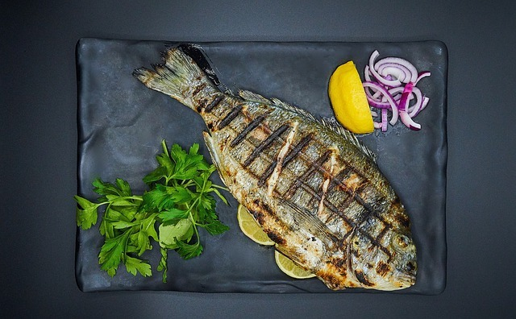

The Flawlessly Roasted Fish

How to Cook a Flawlessly Roasted Fish
Description:
Follow this simple roasted fish recipe to wow the judges of your next cooking test!
Ingredients:
- 1 whole fish
- Olive oil
- Minced fresh garlic
- Garlic powder
- 1 lemon per fish
- Fresh herbs, such as rosemary and thyme
- Salt and pepper
Steps:
- Rinse and pat the fish dry
- Score the fish
- Brush the fish thoroughly with oil, inside and out
- Stuff the cavity with the herbs, lemon, and minced garlic
- Add salt and pepper to the inside of the fish
- Add salt, pepper, and garlic powder to the outside of the fish
- Roast the fish for 18-20 minutes at 450°F or until it flakes easily with a fork
- Remove the fish from the oven
- Add lemon juice and serve immediately